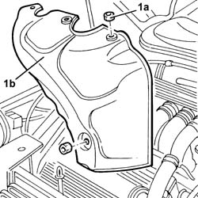
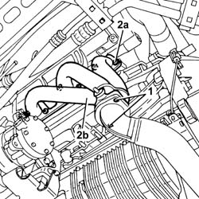

1072C30 l/h exhaust manifold - r + r and replace seal
- Path
- Procedures > 10 ENGINE > 1072 INLET AND EXHAUST MANIFOLDS > 1072C exhaust manifolds > 1072C30 l/h exhaust manifold - r + r and replace seal
- Kind
- repair procedure (removal / refitting; the operation number is the code)
- Applies to
- engines: 2.5 V6; all production periods
- Interactive page
- https://sloeber94.github.io/elrnDB-a156/en/#/3237559
Applies to: engines: 2.5 V6; all production periods
 Removing
Removing
 Refitting
Refitting1. Undo the nuts (1a) and remove the protective heat shield (1b).

Applies to: engines: 2.5 V6; all production periods
7055B54 under-engine guard - r r
1. Tighten the nuts securing the exhaust manifold, left side, to the front exhaust pipe section.
2. Unscrew nuts (2a) and remove the left side of the exhaust manifold (2b).
Remove the gaskets.

Applies to: engines: 2.5 V6; all production periods
Refitting
RemovingFit the exhaust manifold, left side, together with new gaskets and fix it to the cylinder head, tightening the nuts to torque.
 | Fastening | Component | Ø | Value (daNm) |
|---|---|---|---|---|
- | Nut | EXHAUST MANIFOLD/S | M8 | 1.9 - 2.3 |
Tighten the nuts securing the left exhaust manifold to the front exhaust pipe section to the specified torque.
| Fastening | Component | Ø | Value (daNm) |
|---|---|---|---|---|
- | Nut | EXHAUST PIPE FROM MANIFOLD | M8 | 2.5 |
7055B54 under-engine guard - r r
Fit the heat shield and fix it using the nuts.